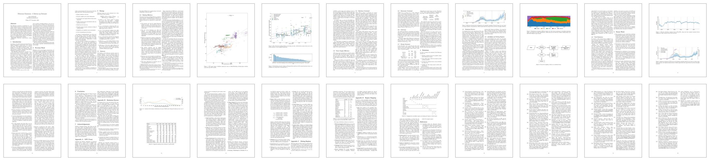

This analysis of the energy and emissions of the Ethereum network relies on current and historical data, including: hashrate, hardware overhead and typical worker configurations, datacenter overhead, grid loss, hashing efficiencies, power supply efficiencies, mining hardware mix, worker locations and pool distributions, and international emissions factors. It does not factor in the price of Ethereum or the price of electricity, so it may be underestimating the energy usage when the price is rising.
For a complete breakdown, check out this short summary post or read the full article.
Some transactions on the Ethereum network actually represent massive collections of transactions. Properly accounting for the number of discrete user-initiated actions on the blockchain would be a project unto itself. But also, the Ethereum network is a bit like your home network router. When you turn on your home router, it uses a fixed amount of energy whether you are streaming high-resolution movies or just sending emails. Ethereum also uses a fixed amount of energy regardless of how many transactions are on the network (at least, during normal activity). Because there is no direct marginal increase in energy from additional use, this makes the question of responsibility a philosophical one rather than a technical one. Clearly the responsibility for the emissions should belong to those who are investing in and profiting from the system. But dividing the total emissions per day by the total transactions per day might give a sense of scale, but it could be more misleading than helpful.
It's hard to find an appropriate comparison. A large centralized service like Facebook runs on a third of the energy. Overall, Ethereum represents around 0.1% of global electricity. In terms of emissions, a typical 1GW capacity coal power plant also emits around 20ktCO2/day at full power. So Ethereum is comparable to keeping an entire coal power plant running at full power.
Energy and emissions vary dramatically from day to day. The best way to track them is by giving daily values in the units kilotons CO2 per day (ktCO2/day) and daily average power in gigawatts (GW). But most other studies in this space, and most statistics about prolonged energy and emissions, give annual totals in megatons CO2 per year (MtCO2/year) and terawatt hours per year (TWh/year). For the sake of comparison I provide both versions here.
Some parameters are known nearly exactly (like hashrate, or grid loss) but others like datacenter overhead are imprecise, ranging from 1% overhead to 20% overhead. Narrowing the range would require transparency from mining operations, which would sacrifice some of their competitive advantage.
This is a non-negligible part of the equation, Marro and Donno estimate around 5% additional emissions from hardware alone over the life of mining equipment.
This may be more true for Bitcoin than Ethereum, because Ethereum mining is wildly profitable and more geographically distributed. Right now I could earn a few dollars a day in profit even with my single GPU and 24 cent per kilowatt hour power. That said, the overall emissions factor has historically been lower than the global average, especially due to mining in South China (not any more) and Sweden (perhaps not much longer in Sweden either).
This is well documented for Bitcoin mining in Texas, but I’ve had trouble finding any indication that a significant portion of the Ethereum hashrate comes from flared gas.
One piece of the infrastructure backing the US dollar is the US military—one of the worlds largest polluters, emitting around 60 MtCO2/year. Over 8x what we estimate for Ethereum. But the US dollar also has a market capitalization around 80x higher than Ethereum. This comparison is also a bit of a stretch when you consider that Ethereum is not just a cryptocurrency, but also a kind of decentralized databased and decentralized cloud computing system. A proper comparison would not treat it as a currency alone.
Last updated ...